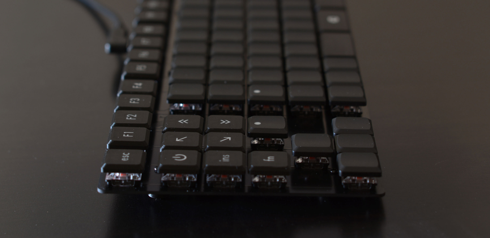
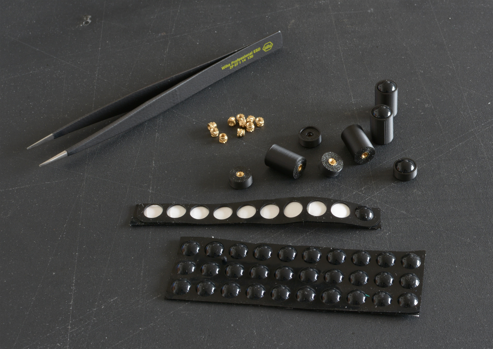
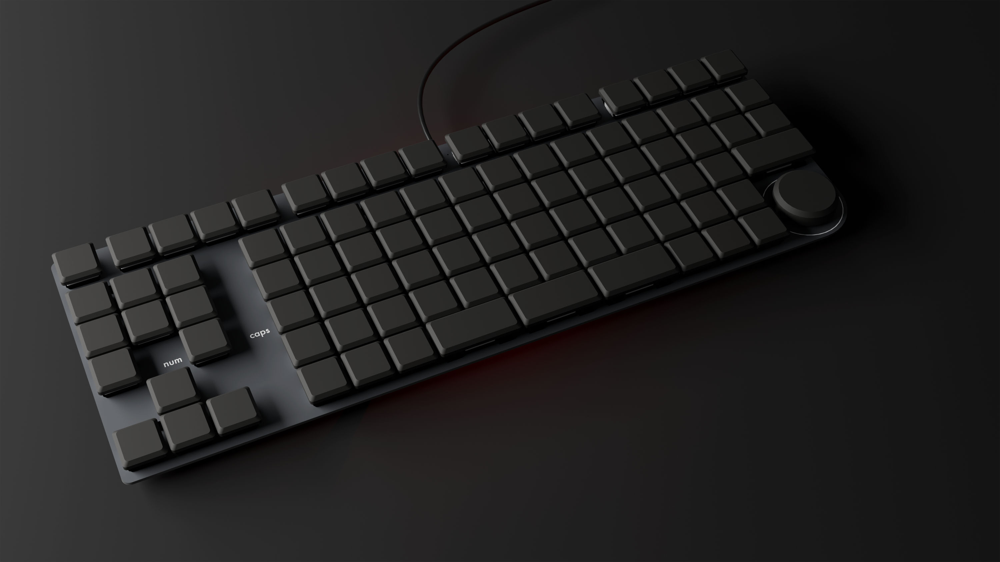
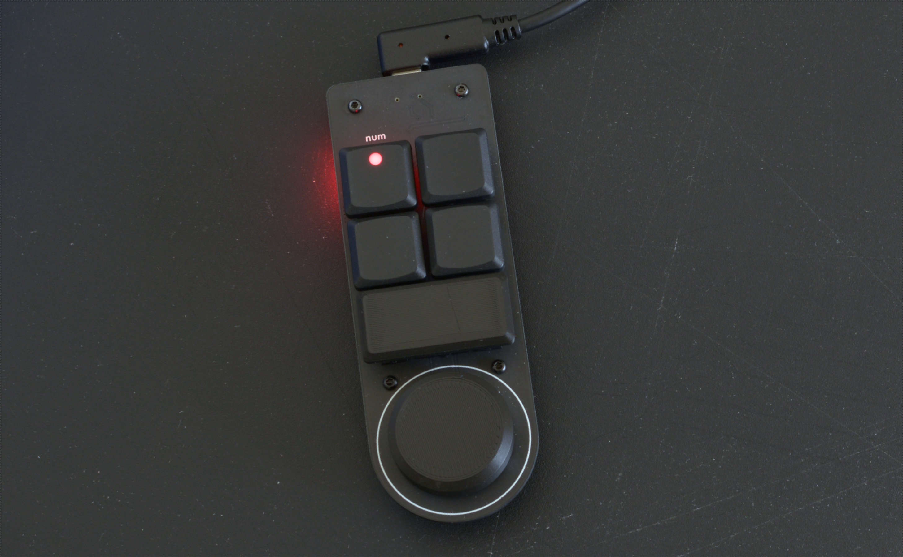
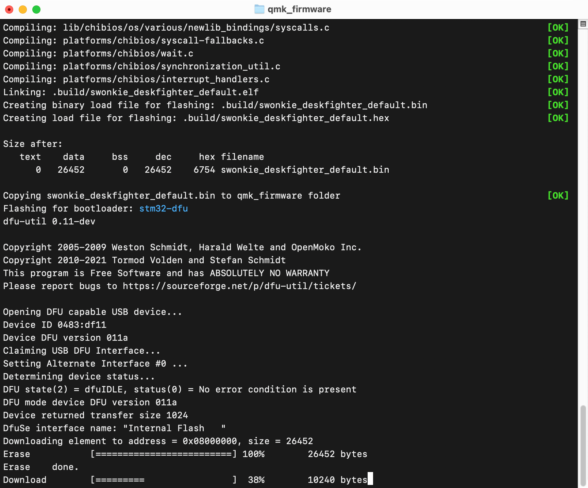

DeskFighter

August 2026
What this article is about
How I designed and built a custom mechanical keyboard (not a kit).
I planned to write this in the form of a tutorial, thinking if I was able to acquire the necessary skills to build a keyboard, anyone can do it. While I believe that's true, it's not realistic for someone who has yet to learn the basics of product design, digital electronics, PCB design, soldering, CAD, 3D printing and building firmware, to build a keyboard as a first project. So this is more of a design journal with tips for other aspiring keyboard builders.
If you're short on time or attention, you can browse through the gallery and read the image captions.
I'm an industrial designer by education and the goals and design principles, I've set for myself, reflect that:
- the keyboard must look good
- the typing experience and ergonomics must be top notch
- adequate and efficient use of materials — no splurging on things I don't need, no overengineering
- avoid as much manual work as possible by using automated manufacturing — 3D printing instead of woodworking; avoid manual post-processing by designing things so they don't need it
- use the right software for each job, to make my life easy
The journey
Motivation
- fully customize everything to my liking
- little annoyances with my current keyboard
- I like designing things and I use a keyboard every day
Layout and features

I used Figma to work out which features I wanted my keyboard to have and how to arrange everything.
I created frames with auto layouts to arrange keys in rows and columns. It's perfect to get consistent spacing, which can be adjusted interactively with instant feedback. Keys can be moved around by drag and drop.
I created the different key types (1u, 2u, with LED indicator) as components, so they stay in sync and global adjustments are easy to make.
Overall it's a very efficient way to work out the layout, making constant adjustments while keeping everything clean and orderly. Of course it's also convenient to try out colors and fonts for labeling. Icons can quickly be added using the Material Icons font.

Once I was happy with the layout, I printed it on paper, at actual size, so I could put my hands on it and give it a sanity check.
What I came up with
- ortholinear makes more sense to me than the arbitrarily staggered rows of the "classic" keyboard (created due to mechanical limitations in ancient typewriters), and I like the clean look of the grid
- arrow keys on left side (my mouse is on the right and I prefer to have a shorter distance from the main block to the mouse)
- dedicated F-keys without alternate functions (often used for debugging and CAD)
- the corners of the keyboard are valuable because you can find them blindly and quickly, even when the hands are not on the keyboard → media playback keys in top right
- rotary encoder for volume in bottom right
- wear patterns on my current keyboard show that I don't use the center of the spacebar → better use for this prime location: split spacebar into three 2u keys:
[ space | backspace | space ] - black, clean, minimalistic look
- white markings
- red LEDs for num-lock and caps-lock
- num-lock enables numerical block where the right hand rests (matches perfectly with ortholinear layout)
Construction
- wired, USB-C connector (host side can be USB-C or USB-A)
- "naked" PCB, no enclosure, no plate — acceptable because my keyboard always sits on my desk (I don't put it on my lap, I don't travel with it)
- 3D printed, screw mounted feet allow customization of keyboard height and angle
- low profile switches and keycaps
Since the PCB will be visible, I have to think about its appearance. Luckily there are quite a few things to tweak:
- contours of the board are routed and can be freely defined
- inner cutouts are also possible
- holes can be drilled precisely
- soldermask is not just green anymore, but available in various colors (even multicolor prints are possible for extra charge)
- silkscreen (usually white or black) for text and graphics
- metallic looking text and graphics can be created by exposing the copper layer
- copper surface treatment: hot air solder leveling (HASL) is cheap but the tin surface looks a little "bumpy", gold plating (ENIG) is very flat but costs extra
Shopping for parts

To find out which keys I like, I bought a key sampler with Kailh Choc V2 low profile switches. Decided to use the red ones (linear).
I really liked the keycaps that came with my sampler kit (Tai-Hao low profile, also called THT). They look nice and I can feel the center of the key, when touch typing. I decided I don't want flat keycaps anymore.
Then things got annoying. My naive expectation was, that there is a huge ecosystem of parts for building custom mechanical keyboards, so it would be easy to find exactly what I want. The former part is true, but my conclusion was wrong. Once you decide on certain parts to use, your options shrink drastically, because everything needs to fit together. Deviate from "the common way" to build a keyboard — e.g. by using an "exotic" layout, low profile keys or not having a faceplate — and it gets even more extreme. While these limitations are understandable, they go against the very reason for building a custom keyboard. If you want a regular keyboard, you can just buy one.
After many frustrating hours of browsing shops and figuring out my options, I came up with the following compromises:
- blank THT keycaps for the main block and arrow keys — for touch typing I don't need labels and I switch between two different layouts on the OS level anyway, so the labels would often be incorrect
- with tactile markers in F and J position
- with a shine-through dot for num-lock and caps-lock
- 3D printed keycaps with labels for the lesser used keys
- 3D printed 2u keycaps (space, backspace, enter) — there are blank THT 2u keycaps, but they have an unnecessary shine-through dot and I don't like the shape very much
- Durock V3 plate-mounted stabilizers — when mounted on the PCB, they have about the right height for my low profile switches and they fit into a 1.6 mm PCB
Along the way I bought two sets of unsuitable stabilizers (my mistake) and a full set of Kailh Choc V2 switches, which were an older, slightly less nice version than the one I tested before (from a different shop). Come on Kailh — if you modify your "V2" switches, call the new ones "V3".
This was the only part of the project I disliked, and I almost gave up.
CAD and 3D printing
I used FreeCAD to keep this project open for others to modify. It has many UI/UX warts, but I like the relatively quick startup and easy import/export of different file formats, which came in very handy.
Keycaps

I designed the keycaps to look similar to the THT keycaps, except with a flat top. The flat top avoids the typical layer lines that 3D prints have, which can be felt and seen and which collect dirt and are impossible to clean.
I created 1u and 2u keycaps in separate files and duplicated them in a grid as many times as I needed.

Then I created the labels in Affinity (Inkscape or any other vector illustration program would work too). This gave me full control over font and icon styling. I used Futura and material icons.

I aligned them in exactly the same grid as I had in FreeCAD, exported them all at once in SVG format and imported that in FreeCAD. A simple extrusion of 0.8 mm and the labels are done.

I found the STEP format ideal to export the parts to be printed. I could export the keycaps and labels together in one file and the slicer correctly loaded that as one object with two parts (keycaps and labels). I could then assign black PLA to the keycaps and white PLA to the labels. The slicing worked as expected and didn't complain about the intersecting objects. Obviously this requires a 3D printer which can change materials automatically.

Some tips if you try the same:
- use a 0.2 mm nozzle — it produces much more detailed labels and it's much easier to get the part right which gets pushed on the stem of the switches
- to get really white labels:
- make the labels at least 0.8 mm thick — white plastic is translucent; it's not enough to print only the first layer in white
- make sure the first layer of the labels does not contain traces of a darker material — clean the nozzle before starting the print ("cold pull") and make sure the slicer uses the white material first on the first layer (Bambu Studio / OrcaSlicer settings)
- use a build plate with a smooth, non-glossy surface — this is the surface the keycaps will have; this way you can avoid sanding or other manual post-processing
Feet

I made very simple, cylindrical feet, with a hole for M2 heat-set inserts, and put some self-adhesive rubber pads on them.
By varying the length of the feet at the front and back of the keyboard, I can adjust its height and angle.
PCB design
Matrix layout and ghosting

To reduce the number of pins the microcontroller needs, the key switches are arranged in a grid, so that each switch connects a specific column with a specific row when pressed. Each row and each column is connected to one I/O pin. The microcontroller continuously scans this matrix by activating one column at a time and reading all rows.
A drawback of this design is that the microcontroller can detect false keypresses under certain circumstances. If three keys are pressed simultaneously, which form an L-shape on the matrix, the microcontroller will register the key in the fourth corner of the imaginary rectangle as also pressed, even if it isn't — a ghost. That is unless the key in the corner of the L-shape has a diode in series to prevent reverse current flow.
The brute force approach to this problem is to add a diode to every single key. That's fine if components are placed by a pick and place machine (diodes are cheap), but I wasn't looking forward to soldering 91 diodes by hand.
To minimize the chance of ghosting, I've arranged the common combo-keys (shift, ctrl, alt, gui) in a single row and gave them diodes. All other keys have unpopulated solder pads with a copper track in between. This way I have to solder only 8 diodes instead of 91. If I encounter a ghosting problem in daily use, I can cut the track and put in a diode for the problematic key.
To plan the matrix layout, I found a spreadsheet very convenient. It's easy to drag cells around to make changes, conditional formatting helps visualizing different types of keys, formulas can give me all relevant stats — for example how many keys I need to buy and how many I/O pins the microcontroller needs for the matrix.
Electronic parts selection

I picked an STM32 microcontroller that works with the popular open source keyboard firmware QMK and has plenty of memory and flash storage to use some of the fancy features that QMK offers.
Because I want the top side of the PCB to look clean, I had to find a USB-C connector which does not protrude to the other side. I found one which requires just two 0.7 mm holes in the PCB, which are barely visible.
Rotary encoders are typically very tall. I needed to find one which would go well with my low profile keys. I found one with 20 clicks per rotation, which feels about right. It takes 16 clicks to go from zero to max volume on my OS.
The rest of the parts are nothing special at all. You can find the full list at DigiKey.
Schematic and PCB layout

I used KiCad, which was a pretty good experience.
For the USB-C connector and ICs, I mostly followed the recommendations in the datasheets and application notes. I routed matrix rows and columns on opposite layers. When selecting footprints, I made sure to use the variants with the suffix "handsolder" — those have slightly larger pads.

A word about 3D models

KiCad comes with a 3D viewer, which shows the current state of the PCB you're working on, including 3D models of all the parts.
Common parts, which are included in KiCad, already come with 3D models. For the few parts I had to add, I made sure to download 3D models. This turned out to be very helpful. By looking at the 3D visualization, instead of the rather abstract 2D layers, I caught many silly mistakes early.
I found a very nice model of the Kailh Choc V2 switches and some stabilizers, made by GitHub user koktoh. I used FreeCAD to remove the third pin from the switch, because the new version, which I use, has only two. In KiCad's footprint editor, where 3D models are added, I also added the model of my keycaps on top of the switches. This was trivial, because the position of each 3D model can be adjusted individually.
For the rotary encoder and USB-C connector I downloaded footprints and 3D models from DigiKey, respectively the manufacturer.
I also imported the 3D model of the rotary encoder into FreeCAD, to design a cap for it. That made it easy to get a perfect fit, without having to measure any dimensions on the real part.
For the mounting-holes in the PCB, I added the 3D model of the foot, including the M2 screw.

The 3D model of the PCB, with all parts, can be exported and opened in FreeCAD. While not necessary in my case, this is invaluable if you need to design an enclosure, which fits snugly around the PCB.
Instead, I imported the PCB into Blender, for a quick visualization — just to get excited about the awesome keyboard I would soon have on my desk.
MacroPad

Before designing the keyboard PCB, to avoid expensive mistakes, I built a small "macro pad" with all the features of the big keyboard, but in a minimal footprint: a rotary encoder, a key with LED, 4 keys connected in a matrix to test anti-ghosting diodes, a 2u key with stabilizer, the same microcontroller that I use for the big keyboard.
This was also an opportunity to check text sizes, line widths and the PCB quality.
I had to reduce the holes and cutouts for the switches and stabilizers a bit, for a better fit. I also increased the pad sizes for the USB-C connector for easier hand soldering. Lastly I reduced the brightness of the USB power indicator LED by giving it a higher value resistor. Otherwise everything worked as expected.

I ordered MacroPad PCBs from PCBWay and JLCPCB. PCBWay offers matte black soldermask, JLCPCB has only semi-glossy black. The "matte black" soldermask (right) I would call "dark gray". The semi-glossy one (middle) is a bit darker, but of course more glossy. Both have a slightly blue tint. They don't look as nice as the PCB on the left.
Get it made
I would have preferred the matte soldermask from PCBWay, but JLCPCB offers the large keyboard PCB much cheaper ($ 24 vs. $ 125 for 5 PCBs) — therefore I went with semi-glossy black.

To my surprise, I received very nice looking PCBs. The soldermask is a bit more glossy than that on the macropad, but it's a beautiful black and the HASL surface treatment is as good as it gets. I'm not sure why this is — maybe these were produced in a different facility. Either way, I'm happy about it.
With the stated goal of using automated manufacturing, I should of course have ordered PCB assembly as well. I actually tried, but JLCPCB's process of parts assignment and positioning was very buggy and frustrating. The price was not very attractive either, because many of the parts were in the "extended" category, for which an extra charge was applied. On top of that I would have had to pay VAT and a € 20 processing fee on import, which get waived for shipments below € 60.
Firmware
After soldering the SMD parts on the bottom, but before finishing the assembly, I wanted to test if the board even works. After all, I could have messed up the design or there might be a manufacturing issue.

I followed QMK's documentation to configure, build and flash the firmware. I already experimented with this when I built the MacroPad and have prepared the configuration for the keyboard.

I used tweezers to simulate key presses. Unfortunately none of the keys on column 3 worked, while those on column 8 triggered column 3 as well. Of course I thought I messed up the PCB design or had some solder bridges. But continuity-testing with the multimeter found no problem.
Then I checked the microcontroller datasheet for info about the I/O pins in question. A footnote described some condition when an unwanted pull-down resistor would get activated on my column 3 pin if the column 8 pin was high on startup (a feature intended for dead battery detection).
Luckily I was able to disable this functionality in the QMK configuration. After that, all keys worked and I was very relieved.
Assembly

Soldering the rest of the parts was a bit of a chore. Fortunately the switches are through hole parts, which can be soldered efficiently without a microscope.
The rest of the assembly — stabilizers, feet, keycaps — was quite enjoyable. A bit like playing with LEGO as a kid.

As a final touch, I used a waterproof marker to paint the edge of the PCB black.
I know, I said no post-processing, but this wasn't much work and well worth the effort.
Using it

After a few days of using it, these are my impressions:
- ortholinear layout feels nice, after getting used to it
- "numpad" works well
- backspace key still needs conscious effort to use, but is very efficient
- QMK invites experimentation — changes to keymap are quick and easy to make
- keys feel and sound good
- volume knob is very clicky
I'm very happy with the result. It looks and feels great, so I consider this project a success.
BOM and costs
I have no affiliation with any of the mentioned shops and manufacturers. There are only links to shops that I've had a good experience with.
| Item | Quantity | Price | Shipping |
|---|---|---|---|
| Keebart | |||
| Switch tester (Kailh Choc V2) with blank keycaps | 1 | € 15.38 | € 8.90 |
| Switches (Kailh Choc V2 Red) | 100 | € 41.20 | € 8.90 |
| THT keycaps blank | 50 | € 18.90 | |
| THT keycaps with dot | 10 | € 4.96 | |
| THT keycaps with tactile marker | 2 | € 1.00 | € 8.90 |
| Max Gaming | |||
| Durock V3 plate-mounted stabilizer set | 1 | € 11.50 | € 8.00 |
| DigiKey | |||
| Various items, quantities for more than one keyboard | – | € ~58.00 | 1 € 0.00 |
| JLCPCB | |||
| DeskFighter PCB | 5 | € 20.85 | 2 € 11.26 |
| MacroPad PCB (optional) | 5 | € 5.46 | 2 € 15.62 |
| PCBWay | |||
| MacroPad PCB (optional) | 5 | € 17.34 | € 25.00 |
| CNC Kitchen | |||
| M2 heat-set inserts | 100 | € 8.67 | |
| Installation tip set C245 (optional) | 1 | € 24.94 | € 9.76 |
| AliExpress | |||
| M2 × 5 mm screws, black, Torx | 50 | € 1.47 | € 2.00 |
| Rubber feet, 8 mm × 3 mm, self-adhesive | 70 | € 2.00 | € 2.00 |
| € 231.67 | € 100.34 |
1 Ordered additional products to get free shipping.
2 Applied coupons to reduce shipping costs.
As you can see, it wasn't cheap. A high quality mechanical keyboard, with enclosure, can be bought for around € 200 (prices vary wildly). However, I now have a keyboard that's tailored to my preferences, which I can't buy anywhere.
Mistakes
Things I've bought, but shouldn't have:
- 2 different sets of stabilizers (wrong height)
- 10 2u keycaps (don't like them)
- 100 Kailh Choc V2 switches, old version (don't like them)
- 50 M2 screws with hex drive (garbage)
But wait…
I want to use something from this project!
Here are the files:
https://github.com/swonkie/DeskFighter
Please give credit by including this URL if you publish something based on my work.
If you want to contact me: swonkie (at) pm.me
Why DeskFighter?It's a nod to "naked" sport bikes, often called Streetfighter.
How much does it weigh?
308 g (10.86 oz).